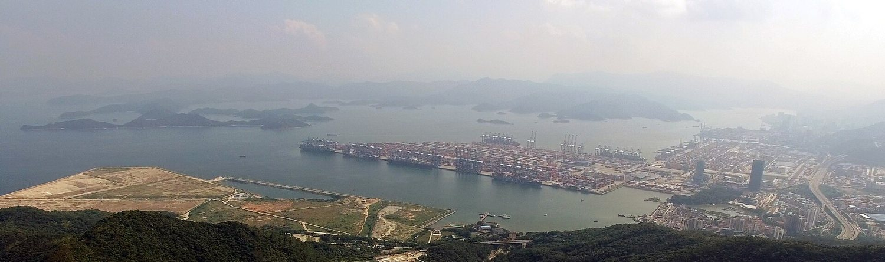
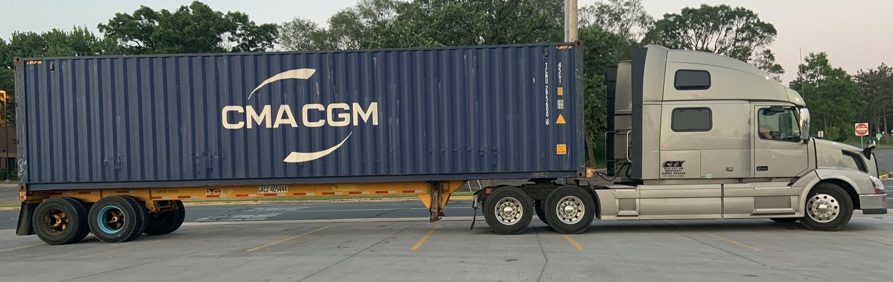
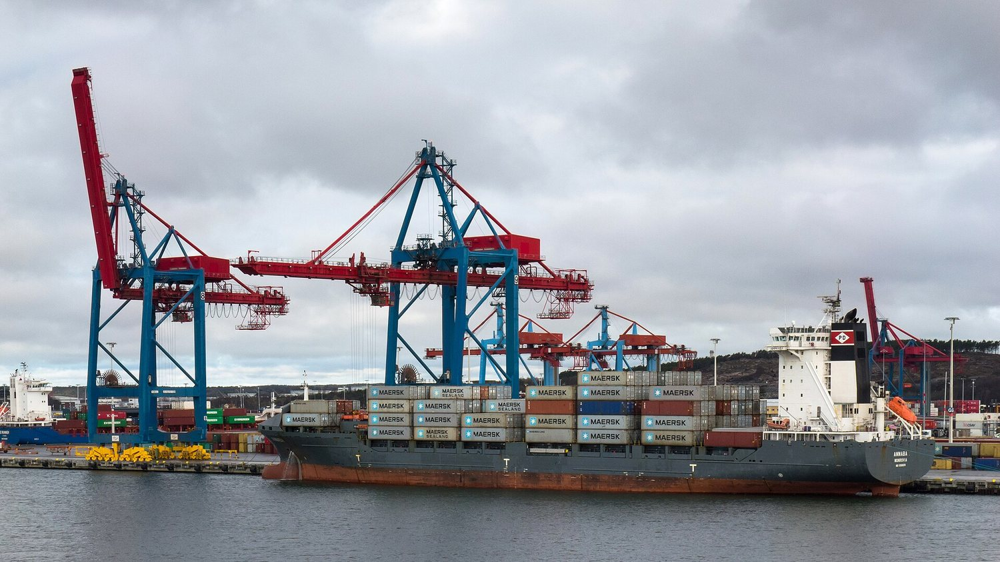
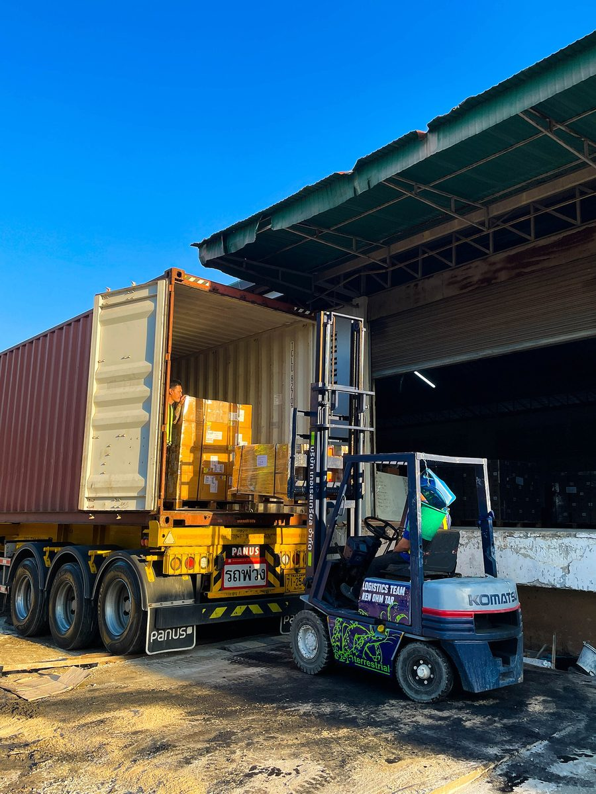
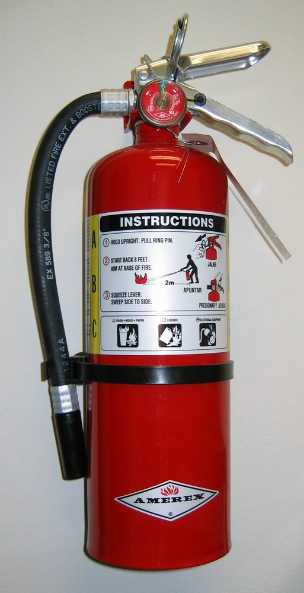
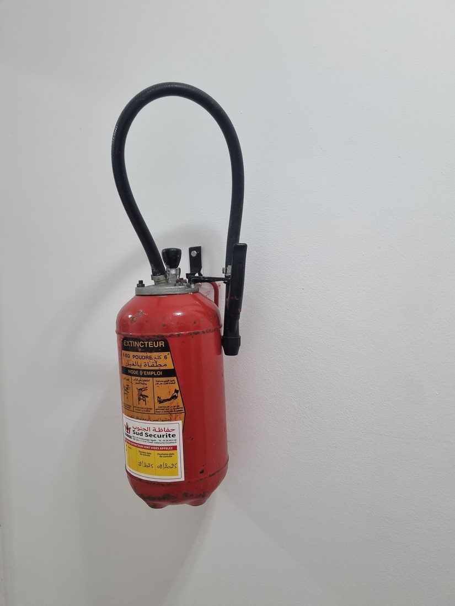
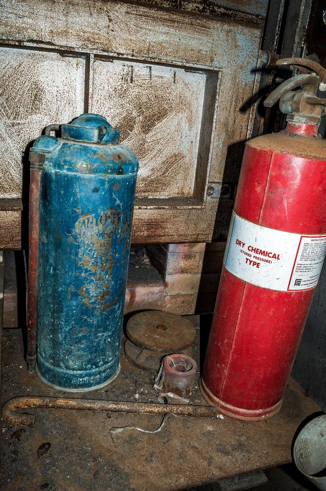

الطفايات الجديدة مقابل المستعملة من الصين: الكلفة الحقيقية لحاوية 40 قدماً إلى جبل علي
طفاية مستعملة سعة 6 كغم تكلف عند باب المصنع أقل بنحو 60% من الجديدة. حمّل الصنفين في الحاوية نفسها، واشحنهما من شنتشن إلى جبل علي، وادفع الرسوم وضريبة القيمة المضافة، وستجد أن هذا الفارق لم يصمد. فبحسب المكان الذي تُعاد فيه التعبئة، قد تصل الحاوية المستعملة أرخص بنسبة 29% — أو أغلى بنسبة 33% — من حاوية الجديدة. هذا المقال يشرح حساب هذا الانقلاب.

محتويات المقال
- الرقم الوحيد الذي يحسم القرار
- حساب الحاوية: ماذا تحمل 40 قدماً فعلياً
- بنود الكلفة الأربعة التي تفرّق الجديد عن المستعمل
- التفصيل الكامل: 2400 وحدة إلى جبل علي
- الكلفة الواصلة للوحدة — الحكم النهائي
- فخ إعادة التعبئة: لماذا يخسر الأرخص سعراً
- أين تتقدم الطفايات الجديدة
- أين تتقدم الطفايات المستعملة
- أي خيار يناسب أي مشترٍ
- بوابة الامتثال الإماراتية
- قائمة التحقق قبل الشحن
- الأسئلة الشائعة
1. الرقم الوحيد الذي يحسم القرار
كل عرض سعر تقريباً ستتلقاه من مورد صيني يكون بصيغة FOB، أي سعر باب المصنع: يخبرك بكم تكلف البضاعة قبل حجز الحاوية، وقبل تقدير الرسوم الجمركية، وقبل أن يتحقق أحد مما إذا كانت الوحدات ستبقى صالحة للاستخدام عندما تصل إلى مستودعك في القوز.
الرقم الذي يحدد فعلياً ما إذا كانت الصفقة مربحة هو الكلفة الواصلة للوحدة الصالحة للاستخدام: إجمالي ما خرج من حسابك مقسوماً على عدد الطفايات التي يمكنك تشغيلها قانونياً أو بيعها في اليوم الذي تُفرَّغ فيه الحاوية.
هذان الرقمان ليسا متناسبين. في حاوية 40 قدماً من طفايات المسحوق الجاف سعة 6 كغم مشحونة من شنتشن إلى جبل علي، يبلغ فارق سعر المصنع بين الجديدة والمستعملة نحو 60%، أما فارق الكلفة الواصلة فيتراوح بين −29% و+33%، لأن أربعة بنود من الكلفة تتصرف بشكل مختلف مع الصنفين:
- صفة البضاعة الخطرة — الطفاية المشحونة مصنفة UN1044 الفئة 2.2، أما الفارغة فتُشحن كبضاعة عادية.
- كمية الحمولة — الحاوية نفسها تستوعب العدد نفسه في الحالتين، لكن ليس الوزن نفسه.
- الرسوم النسبية — 5% من قيمة CIF، فالحاوية الأرخص تدفع رسوماً أقل. وهذا في مصلحة المستعمل.
- قدرة إعادة التعبئة في بلد الوصول — البند الذي يقلب الحساب كله بهدوء.
أعد قراءة الأرقام الثلاثة بالترتيب. رسم البضائع الخطرة الذي يقلق الجميع هو الأصغر بينها. أما مكان إعادة التعبئة فهو الأكبر بأربعة أضعاف.
2. حساب الحاوية: ماذا تحمل 40 قدماً فعلياً

توفّر حاوية 40 قدماً قياسية 67.7 متر مكعب ونحو 26,580 كغم من الحمولة الصافية. وحاوية 40 قدماً عالية الارتفاع تضيف 8 أمتار مكعبة من الارتفاع لكنها لا تضيف حمولة تُذكر. والطفايات كثيفة الوزن، لذا تُحدَّد سعة الحاوية بالوزن لا بالحجم — ولهذا لا تفيدك الحاوية العالية شيئاً هنا، والاختيار الصحيح هو القياسية.
| الصنف | الوزن الإجمالي للوحدة | عدد الوحدات في 40 قدماً | نسبة استخدام الحمولة | العامل المحدِّد |
|---|---|---|---|---|
| مسحوق جاف ABC سعة 4 كغم | 6.5 كغم | 3,400 | 83% | الحمولة |
| مسحوق جاف ABC سعة 6 كغم | 9.0 كغم | 2,400 | 83% | الحمولة |
| مسحوق جاف ABC سعة 9 كغم | 13.0 كغم | 1,700 | 83% | الحمولة |
| مسحوق جاف ABC سعة 12 كغم | 17.0 كغم | 1,300 | 83% | الحمولة |
| وحدة عربة سعة 50 كغم | 85 كغم | 260 | 83% | الحمولة |
أرقام تخطيطية عند استخدام 83% من الحمولة، وهو ما يترك مجالاً للمنصات ومواد التثبيت والتوزيع الصحيح للوزن. أما نسبة استخدام الحجم في بند 6 كغم فتبلغ نحو 48% فقط — أنت تدفع ثمن الوزن لا الحجم.
يعتمد ما تبقى من المقال على 2400 وحدة من مسحوق ABC الجاف سعة 6 كغم كحمولة مرجعية، لأنها الحجم الذي يشتريه معظم مستوردي الخليج فعلياً، ولأنها أسوأ حالة بالنسبة لحجة الطفايات المستعملة (فكلما زاد وزن الصنف، زاد أثر عقوبة الوزن).
لماذا يهم هذا الأمر في حالة المستعمل؟ تزن الأسطوانة الفارغة نحو 3.6 كغم مقابل 4.2 كغم وهي مشحونة. وفي حاوية محدودة بالوزن، يعني هذا الفارق 0.6 كغم لكل وحدة نحو 160 وحدة إضافية في الحمولة — وهو أحد المزايا الحقيقية القليلة لشحن الطفايات فارغة، ويوازي نحو 900 دولار من أجرة الشحن في الحاوية الكاملة.
3. بنود الكلفة الأربعة التي تفرّق الجديد عن المستعمل
3.1 صفة البضاعة الخطرة: UN1044 الفئة 2.2
تحتوي طفاية الحريق المشحونة على غاز مضغوط أو مسال، وتُصنَّف UN1044، الفئة 2.2 (غاز غير قابل للاشتعال وغير سام) وفق مدونة IMDG. ويترتب على هذا التصنيف أربعة أمور:
- رسم إضافي للبضائع الخطرة تفرضه شركة الشحن — عادةً 435 دولاراً للحاوية 40 قدماً للفئة 2.2، مقابل 220 دولاراً للحاوية 20 قدماً.
- شهادة تغليف البضائع الخطرة (شهادة 危包证 الصينية، أو تقرير فحص الأسطوانة كبديل مقبول)، إضافة إلى نشرة بيانات السلامة MSDS بالإنكليزية.
- إقرار البضائع الخطرة الذي يُقدَّم قبل موعد إغلاق الحاوية، مع حجز البضاعة باسم UN1044 صراحةً.
- الشحن المباشر على رصيف السفينة في يانتشو — فالحاوية لا يمكن أن تبقى في ساحة الميناء العادية، بل تُشحن بالشاحنة بعد رسوّ السفينة وتُرفع إليها مباشرة. وهذا يعني رسماً إضافياً للمناولة وموعداً أضيق بكثير.
أما الأسطوانة الفارغة غير المضغوطة فهي ليست بضاعة خطرة، وتُشحن كبضاعة عادية تحت البند الجمركي نفسه، بلا رسم إضافي ولا إقرار بضائع خطرة ولا قيد الشحن المباشر. وفي الحاوية الواحدة يوازي هذا نحو 935 دولاراً — مبلغ حقيقي، لكنه لا يمثل سوى 3.3% من الكلفة الواصلة لحمولة جديدة. وهو ليس سبب اختلاف الخيارين.
3.2 مصاريف المنشأ
النقل البري من المصنع إلى يانتشو، والبيان الجمركي للتصدير، ومناولة المحطة والمستندات، كلها متطابقة فعلياً في الصنفين: نحو 445 دولاراً للحاوية. الفرق الوحيد هو بند البضائع الخطرة المذكور أعلاه.
3.3 أجرة الشحن البحري
يتراوح سعر شنتشن ← جبل علي لحاوية 40 قدماً حالياً بين 1800 و3800 دولار من ميناء إلى ميناء، بحسب الموسم وشركة الشحن ومدى التقدم في الحجز؛ ويُعدّ 2400 دولار نقطة وسط معقولة للحجز خارج موسم الذروة. ومدة العبور 18–22 يوماً من ميناء إلى ميناء، و25–32 يوماً من الباب إلى الباب مع التخليص.
والأهم أن الأجرة لكل حاوية لا لكل وحدة، وهي متطابقة للبضاعة الجديدة والمستعملة باستثناء رسم البضائع الخطرة. لذلك فإن أي قفزة في الأسعار تحرّك كل السيناريوهات بالمقدار نفسه تقريباً لكل وحدة، ولا تغيّر الترتيب — وهي نقطة تستحق التذكر في المرة المقبلة التي تتصدر فيها أسعار الشحن الفورية عناوين الأخبار.
3.4 الرسوم وضريبة القيمة المضافة: البند الذي يصبّ في مصلحة المستعمل
تدخل طفايات الحريق الإمارات تحت البند الجمركي 8424.10. ورسوم دول مجلس التعاون 5% من قيمة CIF (البضاعة + مصاريف المنشأ + الشحن + التأمين)، وضريبة القيمة المضافة 5% على CIF مضافاً إليها الرسوم. والاثنان نسبيان، لذا تدفع حاوية قيمتها 12,000 دولار أقل من نصف رسوم حاوية قيمتها 26,000 دولار.
- الرسوم كلفة حقيقية غير قابلة للاسترداد.
- ضريبة القيمة المضافة قابلة للاسترداد إذا كنت مسجلاً في النظام، لكنها تبقى نقداً خارجاً من الحساب عند التخليص، وتتزايد مع قيمة الفاتورة.

4. التفصيل الكامل: 2400 وحدة سعة 6 كغم إلى جبل علي
ثلاث طرق شراء للحمولة المادية نفسها. جميع الأرقام بالدولار الأميركي، بافتراض أن الدولار يساوي 7.15 يوانات صينية و3.6725 درهماً إماراتياً.
| بند الكلفة | أ. جديدة، مشحونة ومعتمدة |
ب. مستعملة، مجددة ومشحونة في الصين |
ج. مستعملة، فارغة (غير خطرة) |
|---|---|---|---|
| سعر الوحدة FOB | 9.50 | 6.20 | 3.80 |
| قيمة البضاعة، 2400 وحدة FOB | 22,800 | 14,880 | 9,120 |
| النقل البري، المصنع ← يانتشو | 168 | 168 | 168 |
| البيان الجمركي للتصدير | 56 | 56 | 56 |
| مناولة المحطة والمستندات في المنشأ | 221 | 221 | 221 |
| شهادة تغليف البضائع الخطرة والإقرار والشحن على الرصيف | 500 | 500 | 30 |
| أجرة الشحن البحري، 40 قدماً شنتشن ← جبل علي | 2,400 | 2,400 | 2,400 |
| رسم البضائع الخطرة، الفئة 2.2 | 435 | 435 | — |
| التأمين البحري، 0.35% من CIF | 93 | 65 | 42 |
| قيمة CIF | 26,673 | 18,725 | 12,037 |
| الرسوم الجمركية، 5% من CIF | 1,334 | 936 | 602 |
| مناولة الوصول وأمر التسليم | 395 | 395 | 395 |
| المخلص الجمركي وبيان ميرسال 2 | 95 | 95 | 95 |
| التوصيل من جبل علي إلى مستودع دبي | 245 | 245 | 245 |
| الكلفة الواصلة، دون ضريبة القيمة المضافة | 28,742 | 20,396 | 13,374 |
| الكلفة الواصلة للوحدة | 11.98 | 8.50 | 5.57 |
| مقارنة بالجديدة (للوحدة) | — | -29.0% | -53.5% |
| ضريبة القيمة المضافة 5% على CIF والرسوم (قابلة للاسترداد) | 1,400 | 983 | 632 |
| إجمالي النقد الخارج عند التخليص | 30,142 | 21,379 | 14,006 |
| النقد الخارج للوحدة، شاملاً الضريبة | 12.56 | 8.91 | 5.84 |
الافتراضات: 2400 وحدة مسحوق ABC جاف سعة 6 كغم في حاوية 40 قدماً؛ استخدام 83% من الحمولة؛ أسعار FOB هي نطاقات باب المصنع لعام 2026 لطلبات الأعمال التي تتجاوز 2000 وحدة، بأخذ نقطة الوسط؛ أجرة الشحن 2400 دولار من ميناء إلى ميناء خارج موسم الذروة؛ التأمين 0.35%؛ الرسوم 5%؛ ضريبة القيمة المضافة 5%؛ الشحن بشرط FOB مع تعيين المشتري لشركة الشحن. الأرقام نموذج تخطيطي للمقارنة وليست عرض سعر.
5. الكلفة الواصلة للوحدة — الحكم النهائي
تبدو الطريقة (ج) بلا منافس عند 5.57 دولاراً للوحدة. لكنها أيضاً غير مكتملة، لأن الأسطوانة الفارغة ليست طفاية. تصبح طفاية فقط بعد إعادة تعبئتها واختبارها هيدروستاتيكياً وتركيب صمام ومقياس ضغط صالحين ووسمها من ورشة معتمدة. وفي الإمارات تبلغ كلفة هذا العمل 30–45 درهماً لطفاية 6 كغم — لنقل 38 درهماً، أي 10.35 دولاراً.
| الطريقة | الكلفة الواصلة للوحدة | إعادة التعبئة والاختبار للوحدة | كلفة الوحدة الصالحة للاستخدام | مقارنة بالجديدة |
|---|---|---|---|---|
| أ. جديدة مشحونة ومعتمدة | 11.98 | — | 11.98 | الأساس |
| ب. مجددة ومشحونة في الصين | 8.50 | — | 8.50 | -29.0% |
| ج. فارغة + تعبئة في الإمارات | 5.57 | 10.35 | 15.92 | +32.9% |
| ج′. فارغة تُباع لورشة | 5.57 | على المشتري | 5.57 | -53.5% |
الفارق بين أفضل نتيجة وأسوأ نتيجة لوحدة صالحة للاستخدام هو 7.42 دولاراً للوحدة، أي 17,808 دولارات في الحاوية الواحدة. وهذا هو السؤال التجاري كله في سطر واحد.
الخلاصة غير المريحة: شراء طفايات مستعملة لإعادة تعبئتها محلياً هو أغلى الطرق الأربع. وشراؤها وقد أُعيدت تعبئتها واعتمادها في الصين هو الأرخص. إن خصم 60% على سعر المصنع حقيقي؛ والمكان الذي تنفقه فيه هو ما يحدد إن كنت ستحتفظ به.
6. فخ إعادة التعبئة: لماذا يخسر الأرخص سعراً
تبلغ كلفة إعادة تعبئة طفاية مسحوق جاف سعة 6 كغم في الصين نحو 2.40 دولار. ويغطي هذا 6 كغم من مسحوق ABC بنسبة 40% MAP، وشحنة نيتروجين حتى 1.2–1.5 ميغاباسكال، وحشوة صمام جديدة، واختبار ضغط، وملصقاً جديداً. فورش إعادة التعبئة الصينية تعمل بحجوم كبيرة، والمسحوق سلعة أساسية هناك، والأجور محسوبة على هذا الأساس.
أما العمل نفسه في الإمارات فيكلف 10.35 دولارات. وتقف خلف الفارق أربعة أسباب: المسحوق مستورد ومحمّل بهامش ربح، والورشة يجب أن تحمل اعتماد الدفاع المدني (فئة ترخيص قائمة بذاتها وليست عملاً حراً)، وكل وحدة تحتاج ملصق امتثال ومساراً ورقياً، وحجم العمل لكل ورشة أقل بكثير.
والفارق بين الحالتين 7.95 دولارات للوحدة. قارنه ببنود الكلفة التي يتفاوض عليها المشترون عادةً بأقصى جهدهم:
| أداة التوفير | القيمة للوحدة | القيمة للحاوية |
|---|---|---|
| خصم 5% من سعر FOB (الطريقة ب) | 0.31 | 744 |
| توفير رسم البضائع الخطرة بالكامل | 0.18 | 435 |
| التحول من حاوية عالية إلى قياسية | 0.00 | 0 |
| إعادة التعبئة في الصين بدلاً من الإمارات | 7.95 | 19,080 |
مكان إعادة التعبئة يساوي 25 ضعف قيمة تفاوض على خصم 5%، و44 ضعف قيمة إلغاء رسم البضائع الخطرة بالكامل. ومع ذلك هو البند الذي لا يظهر في أي عرض سعر تقريباً ولا في جدول أي مشترٍ.

7. أين تتقدم الطفايات الجديدة


- تعبر بوابة الامتثال. تحمل الوحدة الجديدة شهادة مطابقة صادرة على أساس طراز المصنع ومصنعه. وهذه الشهادة هي ثمن الدخول إلى توريد المشاريع في دبي وأبوظبي. أما الوحدات المستعملة فلا ترثها، لأن شهادة المطابقة تشهد على مطابقة الإنتاج لا على حالة أسطوانة بعينها.
- عدّاد الخدمة يبدأ من الصفر. تُحتسب فترات الاختبار الهيدروستاتيكي من تاريخ الصنع. وقد لا يبقى للأسطوانة التي عمرها عشر سنوات سوى دورة اختبار واحدة، وهذا يضع سقفاً لقيمتها عند إعادة البيع مهما بدت جيدة.
- التوحيد. طراز واحد، وملصق واحد، وطقم قطع غيار واحد، وجلسة تدريب واحدة. وفي طرح مبنى من 500 وحدة، يساوي هذا أكثر من فارق سعر الوحدة.
- الضمان وحق الرجوع. من 12 إلى 24 شهراً ضد عيوب الصنع، مع مورد محدد يمكن الرجوع إليه. أما المخزون المستعمل فيُباع على حاله.
- التدقيق والتأمين. باتت عمليات تدقيق السلامة من الحريق والتأمين تطلب مصدر كل وحدة. والمخزون الجديد يجيب على هذا السؤال بمستند واحد.
- نسبة رفض متوقعة. صفر تقريباً عند الوصول، مقابل 3–8% في دفعات المستعمل.
8. أين تتقدم الطفايات المستعملة
- السعر، حين يكون السعر هو المعيار الوحيد. بكلفة واصلة 8.50 دولارات للوحدة الصالحة للاستخدام، تنافس الوحدة المستعملة المجددة الجديدة بخصم 29% مع أداء إطفاء مماثل. ولورشة بناء أو ساحة أو مستودع سقالات أو غرفة معدات، هذا أمر حاسم.
- التوفر. الإنتاج الجديد يستغرق 25–40 يوماً إضافة إلى مدة الإبحار. أما تصفية العقارات وتجديد الفنادق واستبدال محافظ المعدات فتصل دفعات من 500 إلى 5000 وحدة من طراز واحد جاهزة للتحميل، ويمكن أن تبحر الحاوية في الأسبوع نفسه.
- مبلغ أقل للرسوم وضريبة القيمة المضافة. لأن الاثنين نسبيان، تحجز الطريقة (ج) 632 دولاراً كضريبة قيمة مضافة مقابل 1400 دولار للجديدة — وهو فارق حقيقي في رأس المال العامل إذا كنت تخلّص عدة حاويات شهرياً.
- اقتصاديات التغذية للورش. ورشة معتمدة من الدفاع المدني تشتري أسطوانات فارغة بكلفة واصلة 5.57 دولاراً وتتقاضى 38 درهماً مقابل إعادة التعبئة، تحقق هامش ربح إجمالياً نحو 65% على الوحدة النهائية. وهذا هو الاستخدام الأكثر موثوقية للمخزون المستعمل في الخليج.
- شراء حقيقي ضمن الاقتصاد الدائري. يقيّم عدد من كبار عملاء الإمارات الموردين الآن على أساس الكربون المتجسد. والأسطوانة المجددة تتجنب نحو 12–15 كغم من إنتاج الصلب لكل وحدة — وهو بند ESG يمكن الدفاع عنه، لا مجرد بند كلفة.
والموازنة الصادقة: تحمل دفعات المستعمل نسبة رفض شكلية ووظيفية بين 3% و8%، واستبدال صمامات ومقاييس في نحو 15% من الوحدات، ومخاطر تتعلق بعمر الأسطوانة. وفي حمولة من 2400 وحدة، تعني نسبة رفض 5% أي 120 وحدة — بنحو 1000 دولار من القيمة بأسعار الطريقة (ب)، وهو أكثر من رسم البضائع الخطرة كله. افحص قبل التحميل، لا بعده.

9. أي خيار يناسب أي مشترٍ
| نوع المشتري | الطريقة الأفضل | السبب |
|---|---|---|
| موزّع يورّد للمشاريع والأبراج والفنادق | أ — جديدة | الوحدات الجديدة وحدها تحمل شهادة مطابقة مرتبطة بطراز مدرج؛ واستشاريو المشاريع يرفضون أي شيء آخر. |
| ورشة إعادة تعبئة معتمدة من الدفاع المدني | ج — مستعملة فارغة | أدنى كلفة واصلة للأسطوانة؛ وإعادة التعبئة هي نشاطها الأساسي، فمبلغ 10.35 دولاراً مُدرج أصلاً في مصاريفها الثابتة. |
| مصنع أو ساحة أو موقع بناء | ب — مستعملة مشحونة | إشغال غير خاضع للتنظيم، وشراء مبنيّ على الأداء، وأرخص بنسبة 29% دون خطوة إعادة تعبئة محلية. |
| تاجر يعيد التصدير إلى العراق أو أفريقيا أو اليمن | ج أو ب | بلد الوصول لا يفرض إدراجاً إماراتياً؛ والسعر والحجم هما العاملان الحاكمان. |
| مدير منشأة يستبدل 200 وحدة سنوياً | أ — جديدة | حجم صغير، ومخزون موحّد، ومسار تدقيق واضح، وكلفة البضائع الخطرة غير جوهرية بهذا الحجم. |
| طلب أول أو شحنة تجريبية أقل من 500 وحدة | أ — جديدة، شحن جزئي | شحن البضائع الخطرة جزئياً صعب لكنه ممكن؛ وتجزئة دفعة مستعملة إلى أقل من حاوية كاملة نادراً ما تكون مجدية. |
10. بوابة الامتثال الإماراتية
لا قيمة لأي نموذج كلفة إذا لم يكن بالإمكان تخليص الحاوية وبيعها. وفي الإمارات يُطبَّق نظامان في الوقت نفسه، ويحدث الخلط بينهما كثيراً:
- شهادة المطابقة ECAS من وزارة الصناعة والتكنولوجيا المتقدمة — شرط الدخول الاتحادي للأسواق للمنتجات المنظّمة، ويُتحقق منه في الجمارك. تُصدر لكل طراز ولمصنع محدد، على أساس اختبار النوع وتقييم المصنع.
- إدراج المنتج لدى الدفاع المدني في دبي — الموافقة على مستوى الإمارة، المطلوبة قبل بيع أي منتج إطفاء أو تركيبه في مبنى بدبي. ولكل إمارة أخرى نظام مكافئ.
- الخدمة ترخيص منفصل. تتطلب إعادة تعبئة الطفايات وصيانتها في دبي فئة اعتماد من الدفاع المدني مستقلة عن فئة التركيب. ولهذا تحديداً فإن كلفة إعادة التعبئة البالغة 10.35 دولارات في القسم السادس غير قابلة للتفاوض.
النتائج العملية لمشتري حاوية مستعملة:
- لا يمكن تقديم وحدة مستعملة كمخزون معتمد بشهادة ECAS. خطّط وجهتها كتغذية للورش أو استخدام صناعي أو إعادة تصدير — لا كتوريد للمشاريع.
- تأكد من موقف الاستيراد لدى الدفاع المدني في الإمارة المعنية قبل الحجز. فالممارسة بشأن معدات الإطفاء المستعملة تختلف بين دبي وأبوظبي والإمارات الشمالية، وهي متغيرة.
- احتفظ بتواريخ صنع الأسطوانات وأي شهادات اختبار ضمن مستندات الشحن. فحاوية طفايات مستعملة بلا مستندات عمر هي محادثة جمركية لا تريدها.
- خصّص ميزانية لفحص طرف ثالث قبل الشحن. في دفعة من 2400 وحدة يكلف بضع مئات من الدولارات، وهو الحائل الوحيد بينك وبين نسبة رفض 5%.
11. قائمة التحقق قبل الشحن
- حدّد مكان إعادة التعبئة أولاً. إنه قرار بـ7.95 دولارات للوحدة — أكبر من كل الأدوات الأخرى مجتمعة. وإن لم تكن لديك ورشة معتمدة، فاشترِ مشحوناً.
- أكّد إقرار البضائع الخطرة. UN1044 الفئة 2.2، ونشرة MSDS بالإنكليزية، وشهادة التغليف في يدك قبل إتمام الحجز.
- راقب موعد الإغلاق. تحتاج الفئة 2.2 إلى شحن مباشر على رصيف السفينة في يانتشو؛ والحاوية المتأخرة تفوّت السفينة، فتتبخر ميزة الشحن كلها في غرامات التأخير.
- افحص 10% من الدفعة كحد أدنى. تواريخ صنع الأسطوانات، والتآكل الداخلي، وأسنّة الصمام، وعمل المقياس، وحالة الخرطوم. وارفض الدفعة كلها لا الوحدات المفردة.
- أكّد البند الجمركي في الفاتورة. 8424.10 للطفايات. فالبند الخاطئ يستدعي تدقيقاً يدوياً، وغرامات التأخير في جبل علي تبدأ من نحو 150 دولاراً يومياً.
- احجز 40 قدماً قياسية لا عالية. الطفايات محدودة بالوزن، والأمتار المكعبة الثمانية الإضافية شحن ميت.
- اشحن 3–5% صمامات ومقاييس احتياطية. تكلفتها في الصين تكاد لا تُذكر، وتوفيرها في الخليج مكلف وبطيء.
- ادفع 30/70. دفعة على الإنتاج عند التحويل، والباقي مقابل نسخة بوليصة الشحن. ولا تدفع 100% مقدماً على دفعة مستعملة أبداً.
الأسئلة الشائعة
هل استيراد الطفايات الجديدة أرخص أم المستعملة إلى الإمارات؟
يعتمد الأمر على مكان إعادة التعبئة. الحاوية المستعملة التي تُجدَّد وتُشحن وتُعتمد في الصين تصل بكلفة نحو 8.50 دولارات لطفاية 6 كغم مقابل 11.98 للجديدة، أي أرخص بنسبة 29%. أما الحاوية المستعملة التي تُشحن فارغة وتُعاد تعبئتها في الإمارات فتصل بكلفة نحو 15.92 دولاراً للوحدة الصالحة للاستخدام، أي أغلى من الجديدة بنسبة 33%. سعر المصنع هو نفسه في الحالتين؛ الذي يتغير هو مكان إعادة التعبئة.
كم طفاية سعة 6 كغم تستوعب حاوية 40 قدماً؟
نحو 2400 وحدة في حاوية 40 قدماً قياسية، والمحدِّد هو الحمولة لا الحجم. بوزن إجمالي 9.0 كغم للوحدة، تستهلك 2400 وحدة نحو 21.6 طناً من أصل 26.5 طناً من الحمولة، ونحو نصف الحجم المتاح فقط. والحاوية العالية لا تساعد هنا، فارتفاعها الإضافي يشتري مساحة لا تستطيع استخدامها.
هل تُفرض رسوم بضائع خطرة على طفايات الحريق؟
على الطفايات المشحونة نعم. فهي UN1044 الفئة 2.2 وفق مدونة IMDG، وتفرض شركات الشحن عادةً نحو 435 دولاراً للحاوية 40 قدماً فوق الأجرة الأساسية، إضافة إلى مستندات البضائع الخطرة والشحن المباشر على الرصيف في المنشأ. أما الأسطوانات الفارغة غير المضغوطة فهي بضاعة عادية ولا تترتب عليها أي من هذه الرسوم. وفي الحاوية الكاملة تبلغ كلفة البضائع الخطرة نحو 935 دولاراً.
ما الرسوم وضريبة القيمة المضافة على طفايات الحريق المستوردة إلى الإمارات؟
رسوم جمركية خليجية 5% على قيمة CIF تحت البند 8424.10، إضافة إلى ضريبة قيمة مضافة 5% على CIF والرسوم معاً. الرسوم غير قابلة للاسترداد. أما الضريبة فقابلة للاسترداد إذا كان المستورد مسجلاً، لكنها تُدفع عند التخليص وتتزايد مع قيمة الفاتورة — نحو 1400 دولار لحاوية جديدة مقابل 632 دولاراً لحاوية أسطوانات فارغة.
لماذا تكلف إعادة التعبئة في الإمارات أربعة أضعاف كلفتها في الصين؟
المسحوق مستورد وتُضاف إليه هوامش ربح، والورشة يجب أن تحمل فئة اعتماد من الدفاع المدني لتعمل قانونياً، وكل وحدة تحتاج ملصق امتثال ومساراً ورقياً، وطاقة العمل لكل ورشة أقل بكثير. وفي الصين إعادة التعبئة عملية سلعية بحجوم كبيرة: نحو 2.40 دولاراً لطفاية 6 كغم مقابل نحو 38 درهماً (10.35 دولارات) في الإمارات.
كم تستغرق الشحنة من شنتشن إلى جبل علي؟
من 18 إلى 22 يوماً من ميناء إلى ميناء على خدمة مباشرة، أو من 25 إلى 32 يوماً من الباب إلى الباب بما يشمل التخليص التصديري والإبحار والتخليص الاستيرادي والتوصيل النهائي إلى مستودع في دبي. أضف 25–40 يوماً إذا كانت الوحدات جديدة وما زالت في الإنتاج.
اطلب عرض سعر لحاوية من FireGuard Trading
نشحن طفايات جديدة ومجددة من شنتشن ونينغبو إلى جبل علي والدمام وحمد وصحار، ويمكننا تسعير الطريقتين على الحمولة نفسها ليكون القياس متكافئاً بدل افتراضين مختلفين. أخبرنا بمزيج الأحجام والكمية وما إذا كنت تريد الوحدات مشحونة أو فارغة في المنشأ — فالإجابة تغيّر السعر بنحو 30%، ويستحق أن تُحسم قبل أن تسأل.
المصادر والملاحظات. تعكس نطاقات الشحن أسعار السوق لعام 2026 لشحن حاوية 40 قدماً كاملة من شنتشن إلى جبل علي. وتتبع رسوم البضائع الخطرة جداول التعرفة المنشورة لشركات الشحن للفئة 2.2 من تصنيف IMO. أما معاملة الرسوم وضريبة القيمة المضافة فتستند إلى قواعد الهيئة الاتحادية للجمارك والهيئة الاتحادية للضرائب للبند 8424.10. ومتطلبات الامتثال ملخصة من إرشادات وزارة الصناعة والتكنولوجيا المتقدمة (ECAS) والدفاع المدني في دبي؛ ويُرجى تأكيد المتطلبات السارية لدى الجهة المختصة قبل الحجز. أسعار FOB هي نطاقات باب المصنع لطلبات الأعمال، بأخذ نقطة الوسط. جميع الأرقام نموذج تخطيطي للمقارنة وليست عرض سعر أو التزاماً.
حقوق الصور. تصوير ميناء يانتشو والمحطة: Gigel.atat (CC BY-SA 4.0)؛ سفينة الحاويات: W.carter (CC0)؛ حاوية 40 قدماً: Wikideas1 (CC BY-SA 4.0)؛ تحميل الحاوية: Goterrestrial (CC BY 4.0)؛ الطفاية الجديدة عبر ويكيميديا كومنز (CC BY-SA 3.0)؛ الوحدة المجددة: Adville (CC BY-SA 4.0)؛ الوحدات المهجورة: darkday. (CC BY 2.0). الصور للتوضيح ولا تمثل مخزون FireGuard.